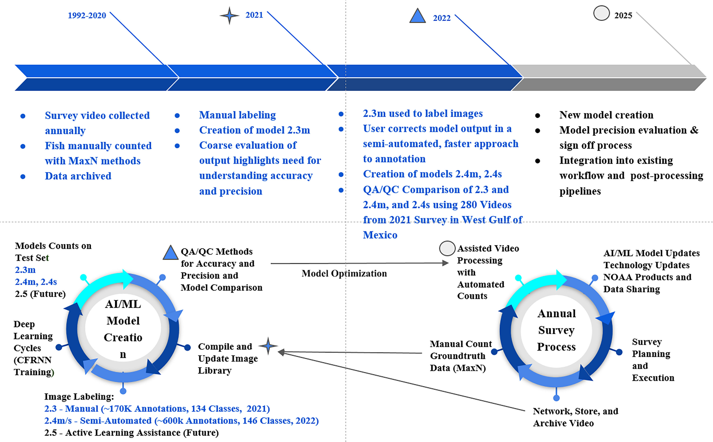

Simegnew Yihunie Alaba
simonyhunie [at] gmail [dot] com
simonyhunie [at] gmail [dot] com
Before starting my Ph.D. journey, I earned a Bachelor's degree in Electrical Engineering and a Master's in Computer Engineering. I completed my Ph.D. in Electrical and Computer Engineering at Mississippi State University in May 2024. My research focuses on computer vision, deep learning, machine learning, and autonomous driving. I am committed to fostering cross-disciplinary collaborations, leveraging state-of-the-art techniques, and remaining at the forefront of research to drive engineering and artificial intelligence advancements.
Representative papers are highlighted.
Simegnew Alaba and John E. Ball
IEEE Access, April 5, 2024
Simegnew Alaba and John E. Ball
IEEE SoutheastCon, April 2024
Simegnew Alaba , ALi C Gurbuz, and John E. Ball
World Electric Vehicle Journal, January 7, 2024
Simegnew Alaba , John E. Ball
IEEE ICECET, Cape Town-South Africa, November 16-17, 2023
Chiranjibi Shah, M. M. Nabi, Simegnew Yihunie Alaba, Jack Prior, Ryan Caillouet, Matthew D. Campbell, Farron Wallace, John E. Ball, Robert Moorhead
M. M. Nabi, Chiranjibi Shah, Simegnew Yihunie Alaba, Jack Prior, Matthew D. Campbell, Farron Wallace, Robert Moorhead, John E. Ball
IEEE Ocean Conference & Exposition Biloxi, MS, USA, September 25--28, 2023Jack Prior, Simegnew Yihunie Alaba, Farron Wallace, Matthew D. Campbell, Chiranjibi Shah, M. M. Nabi, Paul F. Mickle, Robert Moorhead, John E. Ball
IEEE Ocean Conference & Exposition Biloxi, MS, USA, September 25--28, 2023
Simegnew Yihunie Alaba, John E. Ball
Autonomous Systems: Sensors, Processing and Security for Ground, Air, Sea, and Space Vehicles and Infrastructure, Orlando, FL, USA, April 30 – May 4, 2023
Simegnew Yihunie Alaba, Chiranjibi Shah, M. M. Nabi, John E. Ball, Robert Moorhead, Deok Han, Jack Prior, Matthew D. Campbell, Farron Wallace
Ocean Sensing and Monitoring XV: Machine Learning/Deep Learning 1, Orlando, FL, USA, April 30 – May 4, 2023
Chiranjibi Shah, Simegnew Yihunie Alaba, MM Nabi, Ryan Caillouet, Jack Prior, Matthew Campbell, Farron Wallace, John E Ball, Robert Moorhead
Ocean Sensing and Monitoring XV: Machine Learning/Deep Learning 1, Orlando, FL, USA, April 30 – May 4, 2023

Chiranjibi Shah, Simegnew Yihunie Alaba, MM Nabi, Jack Prior, Matthew Campbell, Farron Wallace, John E Ball, Robert Moorhead
Ocean Sensing and Monitoring XV: Machine Learning/Deep Learning 1, Orlando, FL, USA, April 30 – May 4, 2023

Jack Prior, Matthew Campbell, Matthew Dawkins, Paul F. Mickle, Robert J. Moorhead, Simegnew Yihunie Alaba, Chiranjibi Shah, Joseph R. Salisbury, Kevin R. Rademacher, A. Paul Felts, Farron Wallace
Frontiers in Marine Science, 2023
Simegnew Yihunie Alaba, John E. Ball
IEEE Sensors , 2023
Simegnew Yihunie Alaba, John E. Ball
MDPI Sensing and Imaging , 2022
Simegnew Yihunie Alaba, John E. Ball
MDPI Sensing and Imaging , 2022
Simegnew Yihunie Alaba, John E. Ball
MDPI Sensing and Imaging , 2022
Océane Boulais, Simegnew Yihunie Alaba John E Ball, Matthew Campbell, Ahmed Tashfin Iftekhar, Robert Moorehead, James Primrose, Jack Prior, Farron Wallace, Henry Yu, Aotian Zheng
IEEE CVPR FGVC8: The Eight Workshop on Fine-Grained Visual Categorization, 2021